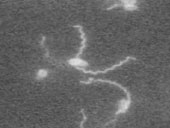
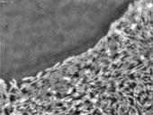
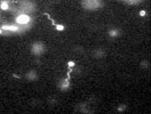
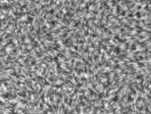
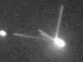

News Archives : 2004 : Howard Berg: Studies on E. Coli in Motion
by Richard Saltus
May 6, 2004
The Bacterial Movie Theater of Professor Howard Berg shows nothing but action films. Harking back to the early days of motion pictures, these movies are silent and shot in black and white. And the manic movements of the actors–bacteria dashing madly about, twitching, gliding, or just spinning in circles–add a Keystone Kops touch.
As comical as this wriggling looks, this is serious stuff to Berg, who has spent decades admiring and investigating the locomotive abilities of microbes, chiefly the common intestinal bacterium, E. coli . Equipped with exquisitely sensitive receptor molecules for "tasting" their watery environments, and powered by rapidly whirling, propellerlike filaments, these bacteria are evolutionary wonders to Berg. And they've kept his plate filled with enough fascinating questions to last a lifetime. The bacterial movies can be viewed on his web page of the Rowland Institute at Harvard, where Berg has one of his labs. (The other is at the Harvard Biological Laboratories.)
Berg is professor of Molecular and Cellular Biology and of Physics. Over some 35 years, he and others have discovered a great deal about the infinitesimally tiny, machinelike structures that power and steer the microbes toward attractive targets, which they sense through an intricate network of receptor molecules.
The goals, however, go beyond mere engineering analysis. "Our quest is an understanding of behavior at the molecular level," says Berg.

Swimming E. coli

Swarming Serratia

Swimming Rhodobacter

Swarming Salmonella

Twitching Pseudomonis
In 1676, van Leeuwenhoek described the bacteria as "little eels"–the first swimming bacteria he saw were spiral in shape. He added that "among all marvels that I have discovered in nature, [these creatures are] the most marvelous of all."
Some 350 years later, scientists are still enthralled. A publisher's description of Berg's book notes that E. coli "swims in a purposeful manner, propelled by long, thin helical filaments, each driven at its base by a reversible rotary engine. As a microscopic organism immersed in an aqueous environment, it has mastered physical constraints utterly different from any that we know, devising sensors, comparators, and motors on the nanometer scale."
Beginning in the 1960s and 1970s, Berg became increasingly drawn to the many questions surrounding the microbe's behavior, chiefly, how does it respond to subtle changes in its watery environment, navigate its way to a food source, swim speedily, and stop on a dime? Berg drew on his early interest in electronics and built a microscope optimized for viewing bacteria–this was only the first of many instruments he's devised for his research.
"I was just fascinated that a creature this size can do what it can do," Berg says. "It lives in our gut–it's a friend. And it's been around a lot longer than we have."
An E. coli bacterium spans only 1 micron in size–about 1/25,000 of an inch: 10,000 of them could fit in the width of your finger.
The complex rotary motor that powers the cell's propeller measures only 50 millionths of a millimeter, yet it contains 20 different proteins analogous to auto parts: there are rings and a drive shaft, a bushing, and a universal joint; the intricacy of this latter component stunned auto engineers when Berg described it to them in a Detroit lecture, he recalls. The reversible motor twirls the filament, or propeller, at 100 cycles per second.
As they swim, says Berg, "they try going in as straight a line as they know how–this is called a "run"–and then they abruptly change direction in an erratic "tumble." The bugs alternately run and tumble in a random dance, but when they sense a favorable gradient (a dissolved substance that becomes progressively more concentrated) the run is extended so they continue in that direction," he explains. "If life is getting better, they go in that direction, and if it's getting worse, they don't bother about it."
Once aspiring to be an electrical engineer, Berg–like others in the field–was intrigued by the network of molecular receptors that stud the cell membrane, sensing the increasing or decreasing strength of attractant chemicals in the water. The researchers were amazed at how the receptor network could sense the chemicals and send an amplified signal to the cell's navigation equipment to steer this way or that. Remarkably, experiments showed that when the amount of chemical snared by the receptors increased by only 1%, the activity in the receptor network jumped by 35%.
After long investigation, it turned out that the receptor system is composed of clumps of several thousand receptor molecules that "talk to each other," Berg explains. "One receptor binds an attractant, and tells its friends," the way a bit of gossip races like wildfire among acquaintances and gets more vivid in the telling. The professor reported new findings on the behavior of these receptor clusters in a Nature paper this spring.
Like that of the bugs he studies, Berg's path has taken many twists and turns. As a freshman at the California Institute of Technology, a chemistry course taught by Linus Pauling inspired him. After studying in Copenhagen, he enrolled at Harvard Medical School but decided after two years of preclinical work that "this was too complicated for me." Transferring to Harvard University, he specialized in chemical physics and attained his Ph.D. in the laboratory of Nobelist Norman Ramsey.
About this time, Berg was chosen for the Harvard Society of Fellows, and comments that "this allowed me to get my act together." Assigned to manage the undergraduate biochemistry program, he became interested in the microbes that would be his life's work–though this realization sent him tumbling again, first to the University of Colorado, then Caltech for a second time, before returning to Harvard.
Instant photography pioneer Edwin Land recruited him for the Rowland Institute of Science that he founded in 1980. (It is now part of Harvard.)
Scientifically, says Berg, "I've been digging in the same garden since 1968," and he says there is still a great deal to learn about bacterial locomotion.
"I keep thinking I should work on something else," he admits, "but then I think of another question." Another question to pursue that will add still more to the fund of knowledge of the surprising microbes.
For ordering information for "E. Coli in Motion," go to http://www.springer-ny.com and search by Author/Editor for Howard Berg. See also Victor Sourjik and Howard C. Berg, "Functional interactions between receptors in bacterial chemotaxis." Nature 428 (25 March 2004), 437-441. >> pdf file